SubScript
Every word of a video, as text you can keep.
Paste a video link and SubScript turns its subtitles into clean, readable text — in its original language or translated into the language you understand. Save it as Word, PDF or plain text, or share it in one tap.
The first download is almost ready — check back very soon.
Free · No account · Your files stay on your device · Android, iPhone, Windows & Mac
Other files: Download installer instead · Windows ZIP · Android (all phones, larger) · Android older phones (armv7) · Android x64 (emulators, Chromebooks) · All versions
What will you keep?
A few ways people use SubScript.
The khutbah that moved you
You listened to a Friday khutbah or a lecture online and want to keep every word. If the video has subtitles, SubScript gives you the full text in seconds — as a clean Word document, a PDF ready to print, or plain text. Read it again, quote it accurately, or send it to your family in their language.
Learn from any teacher, in any language
The best course on the subject you're studying is in a language you don't speak, and nobody translated it into yours. Get the subtitles and translate them into your language, then study the text at your own pace.
Study notes without typing
Lessons, tafsir classes, university lectures, tutorials: turn hours of talking into text you can read, highlight, search and revise from — instead of pausing and typing.
Share with someone who can't listen
For a parent who is hard of hearing, a friend in a noisy place, or someone with a slow connection: send the text of the video instead of the video.
Bring it to your family in their language
A beautiful talk in Arabic for your cousin who reads French. A documentary in English for your grandmother who reads Turkish. Pick the language, download, share on WhatsApp.
Quote it exactly
Students, writers, journalists and researchers: copy exact quotes from interviews, speeches and talks without re-listening ten times.
Recipes, tutorials and how-tos
Keep the steps of a recipe or a repair video as text you can follow without pausing the video with wet hands.
Language learners
Read the original next to its translation to understand what you just heard, word by word.
See it in action
The same clean design on phone and desktop, in light and dark.
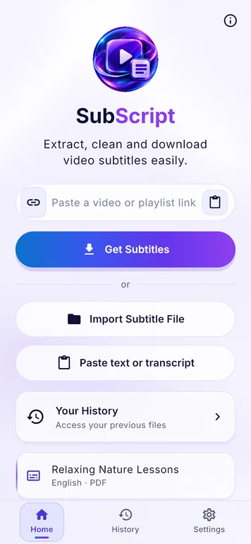
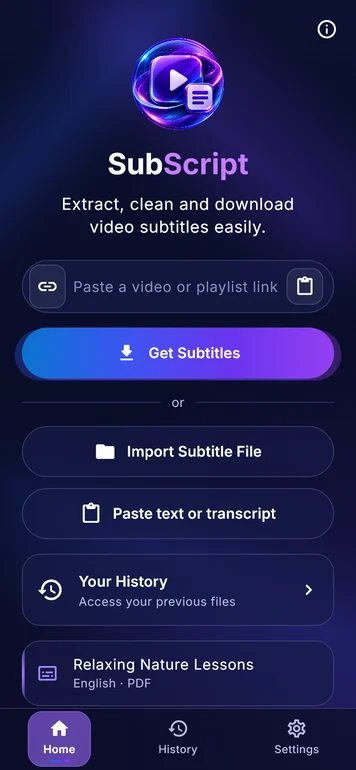
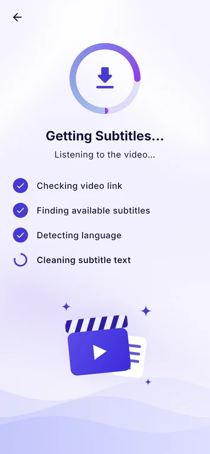
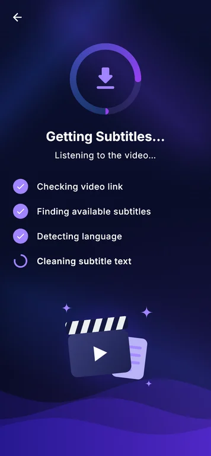
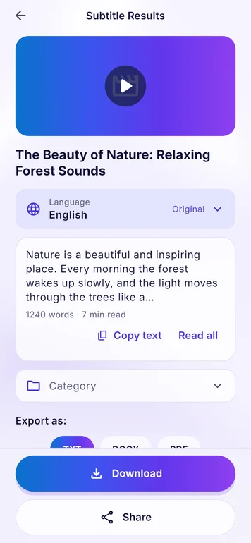
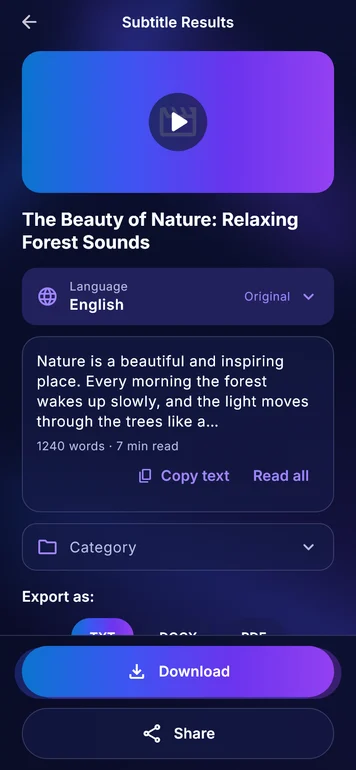
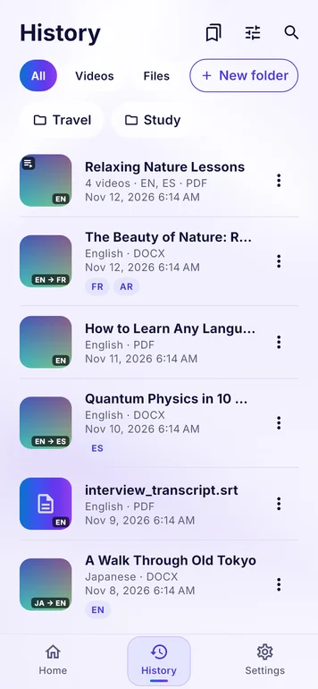
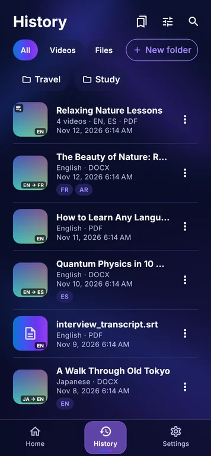
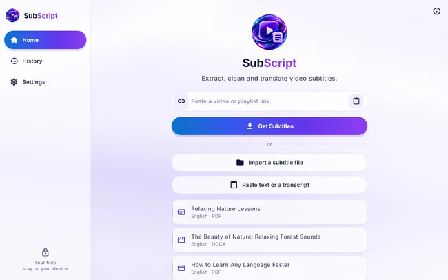
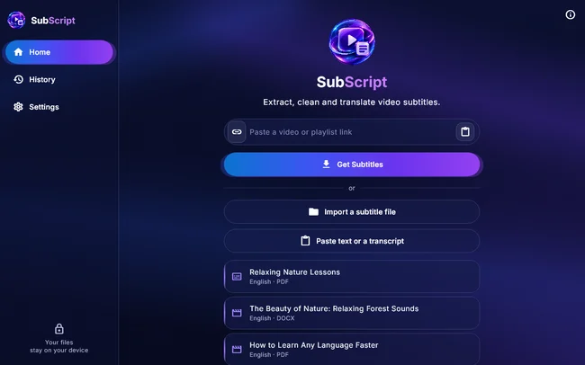
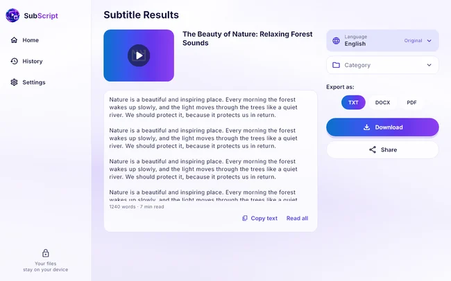
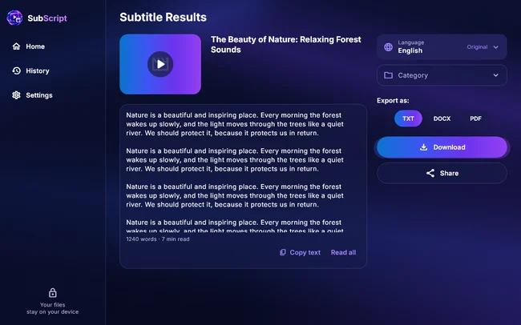
Four steps. That's all.
- Paste the linkCopy the video link and paste it into SubScript (or share it straight from the YouTube app on Android).
- We clean the textSubScript removes the timings and codes and joins everything into readable paragraphs. Your words are never changed.
- Choose a languageKeep the original language, or pick any of 50+ languages to translate into.
- Download or shareSave as Word (DOCX), PDF or plain text (TXT), or send it to WhatsApp, Telegram, email and more.
Already have a subtitle file (SRT, VTT…)? Import it — no internet needed.
Your text, the way you need it
Word (DOCX)
Edit it, highlight it, add your notes.
Clean pages ready to print or read on any device. Arabic and other right-to-left languages are laid out correctly.
Plain text (TXT)
Opens everywhere, on every phone and computer.
Made to be simple
Works offline
Your history, files, imports and exports work without internet. On phones, translation works offline too once a language is downloaded.
50+ languages
Translate into the language you need. Each language downloads once, only when you choose it.
Readable text
When a video's subtitles have no punctuation, SubScript adds sentence breaks so it's easy to read. One switch shows the exact original.
History & folders
Every text is saved on your device. Organise them in folders, search them, translate them again later.
Keep the link
Each saved text keeps its video link, so you can watch it again while reading.
Watch with captions
Play the video inside the app with its captions scrolling in sync under it. Tap any line to jump there.
Bilingual captions
See each line in the original and in your language right under it. Choose the size and colour of both.
Voice-over
Hear the translation read aloud. Set the video's volume and the voice-over's volume separately, from silent to full.
Bookmarks
Save any caption or paragraph, add a note, search your bookmarks and export them as TXT, Word or PDF.
Private by design
No account, no ads, no tracking. Nothing is uploaded to us — we never see your files.
Your language
The app speaks English, Arabic, French, Spanish, German and Italian, and follows your phone's language.
Light & dark
Beautiful in both.
Where can I get subtitles from?
- YouTube — videos, Shorts and live replays that have subtitles (made by the creator or automatic).
- Vimeo, TED, Dailymotion and TikTok — when the video has subtitles (TikTok works on a best-effort basis).
- Direct subtitle links and web pages — a link to an SRT, VTT, SBV or ASS file, or a page that includes subtitles.
- Your own subtitle files — SRT, VTT, SBV, ASS/SSA and more, fully offline.
- More video sites are being added.
Honest note: SubScript can only get text from videos that have subtitles. If a video has no subtitles, the app tells you clearly — it never invents text.
Install guide
SubScript is not in the app stores yet, so your system may show a warning. This is normal — follow the steps for your device.
- Tap Download for Android above. If your browser warns that the file may be harmful, tap Download anyway.
- Open the downloaded file SubScript-Android-arm64.apk (from your notification bar or the Downloads app).
- Android asks to allow installs from this source. Tap Settings, switch on Allow from this source, then go back.
- Tap Install, then Open.
- If your phone says "App not installed" or "not compatible", it is an older model: use the Android (all phones) link under the download buttons instead.
You can switch the “unknown apps” permission off again afterwards in Settings → Apps → Special access.
- Click Get it from Microsoft Store above and press Get. That is the easiest way, and it works on every PC.
- Prefer the installer? Use Download installer instead (SubScript-Setup.exe) or the Windows ZIP link. Double-click the file. If a blue “Windows protected your PC” window appears, click More info, then Run anyway.
- If Windows blocks it completely, Smart App Control is on — install SubScript from the Microsoft Store instead (it works with Smart App Control).
- Follow the installer (Next → Install → Finish).
- Open SubScript from the Start menu or desktop shortcut.
- Click Download for Mac above to download SubScript-macOS.dmg.
- Open the DMG and drag SubScript into the Applications folder.
- Open SubScript. macOS will say it cannot verify the app — click Done (not “Move to Trash”).
- Open System Settings → Privacy & Security, scroll down and click Open Anyway next to SubScript, then confirm with your password.
You only need to do this the first time.
- On a Windows PC or Mac, install Sideloadly or AltStore.
- Download SubScript-iOS.ipa using the Install on iPhone / iPad button above.
- Connect your iPhone or iPad with a cable and trust the computer when asked.
- Open Sideloadly (or AltStore), drag the IPA in, and sign in with your free Apple ID. Click Start.
- On the device: Settings → General → VPN & Device Management, tap your Apple ID and choose Trust. If you see Developer Mode in Privacy & Security, turn it on and restart.
Apps installed with a free Apple ID expire after 7 days. Re-open Sideloadly or AltStore and refresh to keep using the app. Your saved data stays.
FAQ
Is it really free?
Yes. No account, no subscription, no ads.
Does it change the words?
Never. It only removes timings and codes. If it adds punctuation to unpunctuated subtitles, it says so and you can switch back to the exact original.
Can it get text from a video without subtitles?
No. It reads existing subtitles; it doesn't listen to the audio.
What about Instagram, TikTok or Facebook?
Most of these videos don't publish their subtitles in a way any app can read. SubScript supports YouTube, Vimeo, TED, Dailymotion, subtitle files and web pages with subtitles, and TikTok when its subtitles are available. Instagram, Facebook, X and Threads don't share their subtitles with other apps — if the same video is on YouTube, use that link.
Why do some videos show ads in the player?
Some videos show YouTube's own ads in the player — that's from YouTube, not SubScript.
Is my data private?
Your history and files stay on your device. On Windows and Mac, translation uses an online service, and the app asks for your consent first. See the Privacy Policy.
Why does my computer warn me when I install it?
The app is free and independent, so it isn't sold through Microsoft or Apple stores. Follow the simple install steps above — it's normal. Only download from this page or the official release page.
Can I use it for any video?
Only use it with content you have the right to use. Read the Terms and Copyright notice.